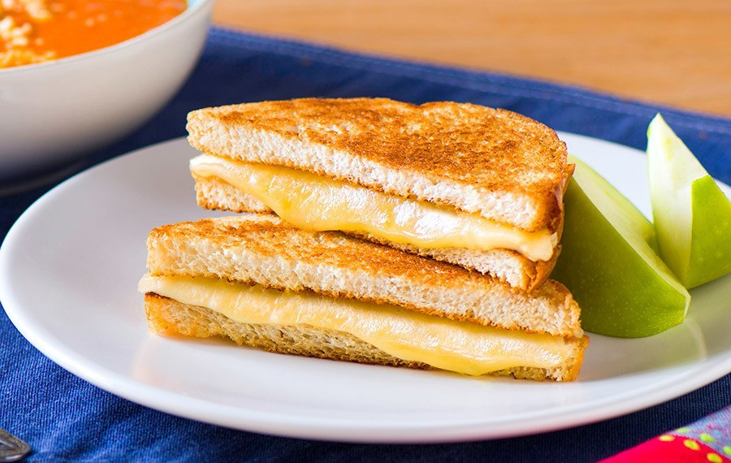

Sandwitch de queso fundido

Pan tostado con queso derretido.
El sandwhich de queso es un clásico bocado que sacia el hambre. Rebanadas de pan crujiente por fuera, calentado, con un queso fundido y chorreante por dentro. El queso se derrite entre las rebanadas de pan, fusionándolas en una experiencia de mordiscos jugosos y sabor cremoso.
Cada mordida rebana provoca que el queso se extienda por el pan. El calor hace que los elementos sencillos, pan y queso, se transformen en algo más sustancioso e irresistible. El sandwhich de queso se disfruta caliente, cuando el queso está completamente fundido y el pan bien tostado. Es una merienda o cena rápida que satisface gracias a su combinación simple pero efectiva.
Ingredientes
- Pan blanco
- Queso cheddar o a elección
- Mantequilla
- Sal y pimienta (opcional)
Como hacerla:
- Corta dos o más rebanadas de pan. Coloca mantequilla en ambos lados de cada rebanada.
- Coloca las rebanadas de pan en una sartén a fuego medio. Tuesta el pan dando vuelta una vez, hasta que esté ligeramente dorado, aproximadamente 2 minutos por lado.
- Retira el pan de la sartén. Coloca por un lado, rebanadas de queso a tu gusto encima de una rebanada de pan.
- Tapa con la otra rebanada de pan. Presiona ligeramente.
- Regresa el sandwhich de queso a la sartén y tapa. Cocina hasta que el queso esté completamente derretido, aproximadamente 2 minutos.
- Retira del fuego, destapa y corta diagonalmente el sandwhich de queso. Sirve caliente.
- Opcional: Espolvorea con sal y pimienta al gusto.